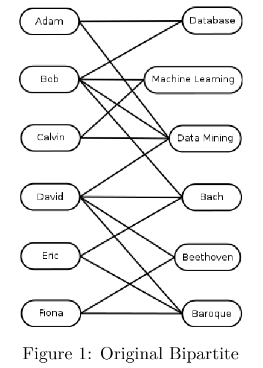
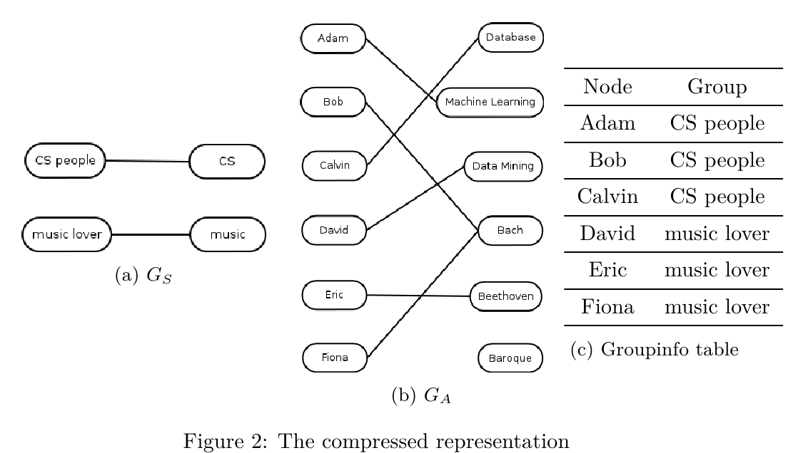
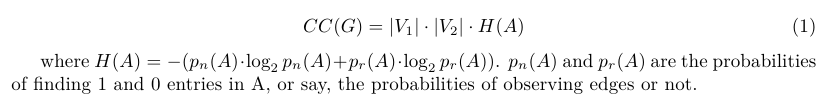
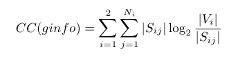
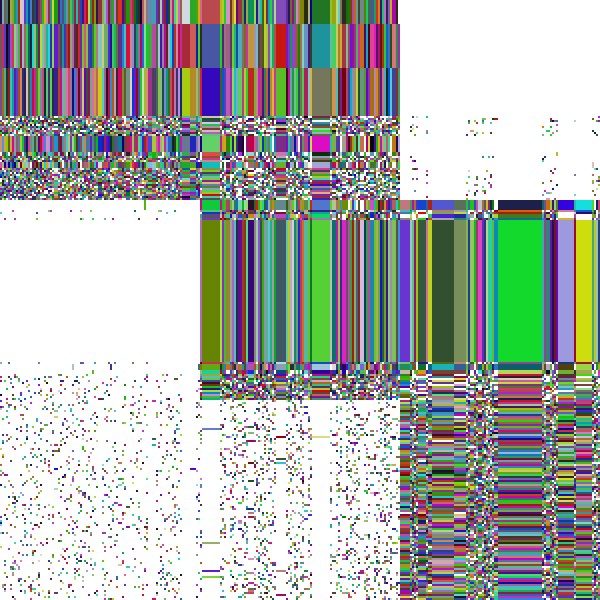
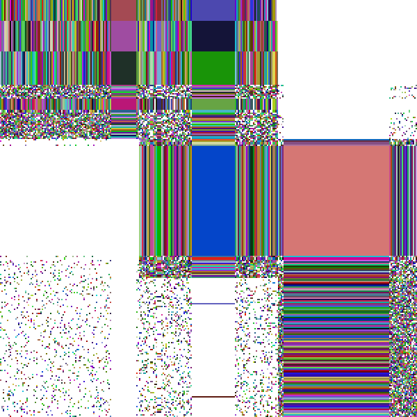
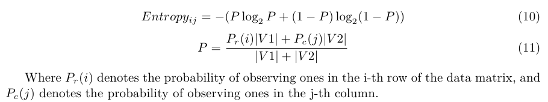
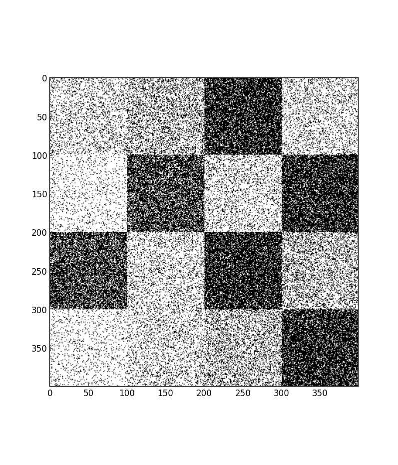
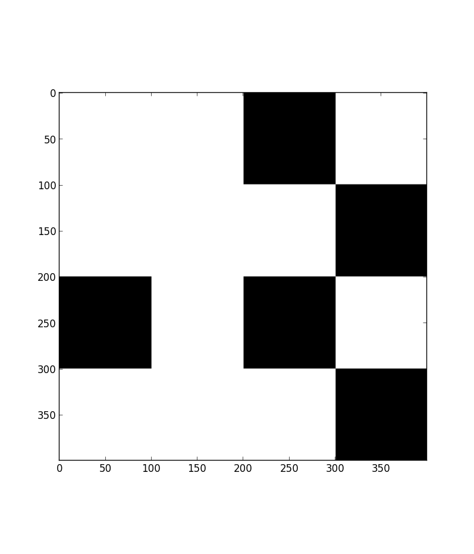

Further improvements
- Introduce the calculation and use of information entropy in all aspects related.
- Try something new.
For example, AutoEncoder

| Project | Experiments and Analysis of the Algorithm SCMiner |
|---|---|
| Date | 19 June 2013 |
| Members | 杨帆 |
Many relations in real life can be expressed naturally in bipartite graph.
Input: a bipartite
Output:
Input:
Ouput:
MDL(Minimal Description Length) principle is a formalization of the Occam's Razor principle.
SCMiner tries to find a model(compression) to represent the original data with lowest possible coding cost.
First, assume that bipartites are represented using adjacency matrices(binary arrays).
Lower bound of the coding cost for such a binary array(a bipartite in fact), according to information theory
Lower bound of the coding cost for a grouping info table
similarity is defined by sim(i, j) = commonNeighbors/allNeighbors
Either add or remove edges. Choose the action with fewer operations.
SCMiner can achieve perfect result when epsilon is carefully chosen.
During a run of SCMiner
During a run of SCMiner
There exists errors that were not corrected and persisted to the end.
In this sense, attempts to correct wrong edges will be ecouraged with negective cost.
SCMiner now produces correct result with a much wider range of epsilon.
The dataset used is 20,000 news article and the terms they used.
The test uses SCMiner to discriminate baseball news from computer graphics news.
Result is not good
At that point two article nodes were merging. Their common connections are key words(code, img, graphic, etc), but the far more connections not in common are mostly unimportant terms(gatekeeper, assemble, etc)
This results in a huge increase in the explanation needed in Ga
Introduce information entropy to discriminate different information importances.
For example, AutoEncoder
Input the data matrix row by row as the input signals.
Input signals and output signals:
 Thank you!